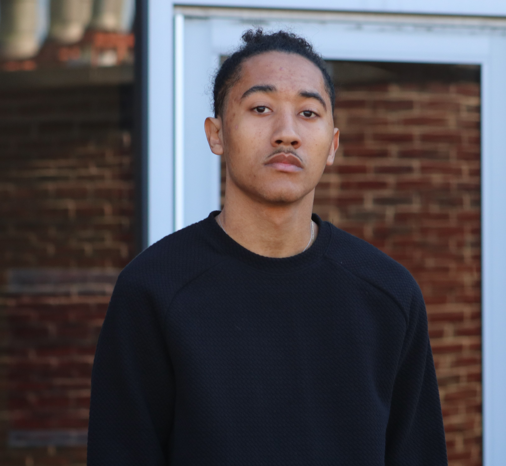

Information & Contacts
Na'Sir Miller
1362 U.S. Route 9.W., Selkirk, NY
(518) 653-0466
nmiller1329gmail.com
Objective
As a student at RPI, I am studying Business Analytics (hoping to switch to Computer Science)
and Information Technology & Web Science with a concentration in Machine Learning, I intend on
creating innovative, data-driven solutions to the finance realm. Thusly, I am striving and working to develop
my skills in ML to become a Quant.
Education
Rensselaer Polytechnic Institute
B.S in Business Analytics and Information Technology & Web Science (August 2022 to December 2025)
Courses: Calculus I & II, Data Structures, Intro to Computer Science, Intro to ITWS (Web Developement), Management in the Digital Age
- NSBE Chapter Member - September 2022 to Current
- RPI's Bridge Program - July 2022 to Current
- Dean's Honors List - May 2023
- Secretary of Lally Management Student Association - September 2022 to May 2023
Ravena Coeymans Selkirk (RCS) High School
High School Diploma(September 2018 to June 2022)
Course: AP Statistics, AP Calculus I, Economics, E-Commerce, UHS Spanish
- National Honor Society - September 2020 to June 2022
- College Board's African American Recognition - September 2021
- College Board's AP Summer Strategies Academy for AP Calculus - August 2021
- Natural Helpers - September 2019 to June 2022
- Guided Pathway Support Program Finacial Literacy Chair - December 2021 to Feburary 2022
- Honor Roll - September 2015 to June 2022
Work Experience
Project Almanac - Farm::Troy (May 2023 to Current)
Developer
A tech startup bringing about a reinassance to the
antiquated field of agriculture and developing a variety of tech solutions to help
everyone Live Different.
- Generated $40,000 in investments
- Utilized a test-drived workflow: Jira, Unit Testing
- Built the mobile app with Flutter (Dart)
- Also used GitHub for version control and collaboratio
Helite Supplements (April 2023)
Website designer
Assisted a hydration company owner in redesigning website.
- Redesigned website using WordPress
- Collaborated with peers to quickly deliver a clean, modern website to customer
- Developed a color scheme and theme that matched brand
IBM Data Science - Professional Certificate (May 2023 to August 2023)
Student
Completed the IBM Data Science Professional Certifcate giving me some knowledge in the
basics of data science and its core principles.